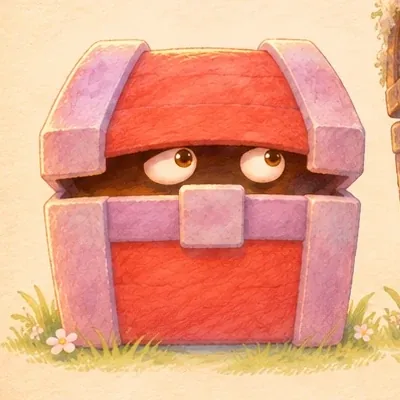
寶箱怪
長老家倉庫裡用了一百年的箱子，醒過來變成寶箱怪。整個夏天島上只有它醒著，每天去敲族人的蓋子，一個敲三下。
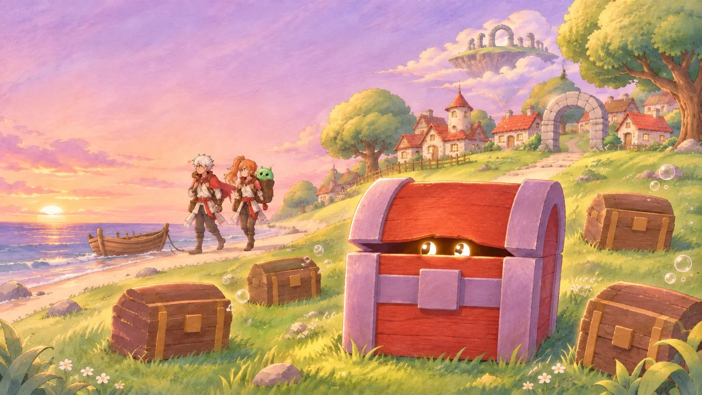
在這座島上，一個箱子被人好好用了一百年，就會醒過來，變成寶箱怪。島民把重要的東西交給寶箱怪保管，寶箱怪替大家顧著，兩邊一起過了很久的日子。
你轉生成長老家倉庫裡的那個箱子。族人一睡就是好幾年，整個夏天只有你醒著。直到岸邊停了一艘船，兩個獵人帶著史萊姆 Pulut 上島，開始撬開寶箱，搶走大家寄放的東西。
去村口、營地、遺跡把族人叫醒，騎上火焰飛龍到雲端高台，把冒險隊趕走。
轉生故事裡，主角通常是打開寶箱的冒險者。這次你轉生成被撬開的那個寶箱，上島的冒險者反而是闖進別人家搶東西的人。
島上的箱子被一家人好好用了一百年，才會醒過來。寶箱怪守的是別人交給它的東西：長老小時候戴的小藍帽、一封摺好的信、一顆圓圓的白石頭。
整個夏天，島上只有它醒著。它每天去敲族人的蓋子，一個敲三下，叫不醒就說一聲「明天再來」。故事最後它說：「可是現在，我知道敲三下會有人回答。」
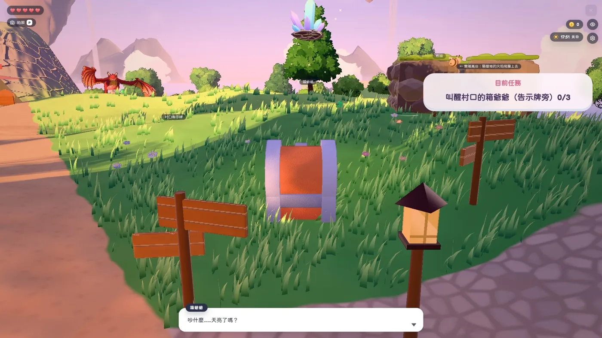
WASD 移動、空白鍵跳、E 對話與叫醒。島上六個地方藏著寶箱怪剛轉生時的回憶，26 個寶箱都是族人。一輪大約 10～12 分鐘。
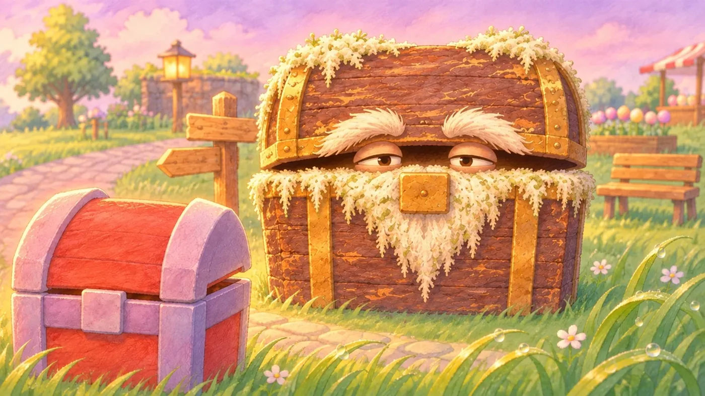
52 張手繪插圖，一句台詞換一張。中間有敲三下、島上地圖、接蘋果、高台選招式四個小互動。不用在 3D 裡走動也能讀完整個故事，手機請轉成橫的。
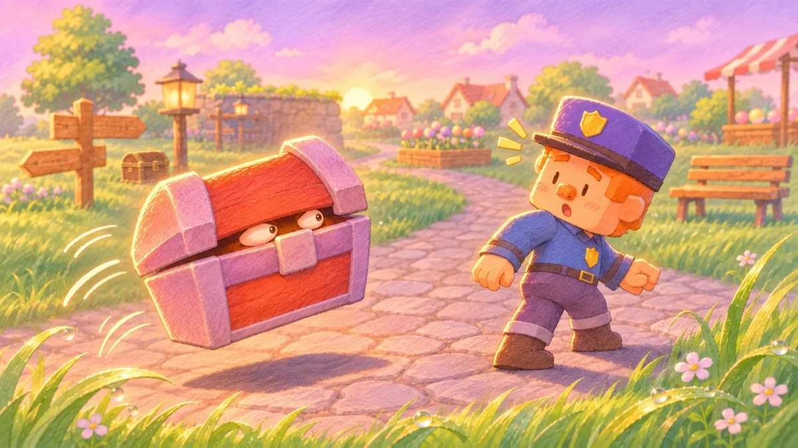
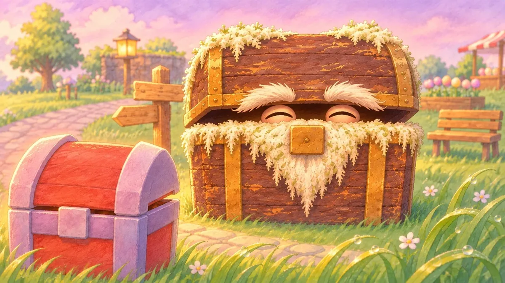
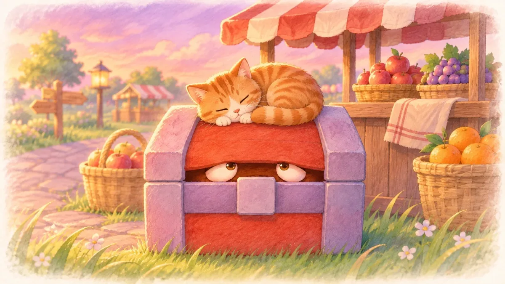
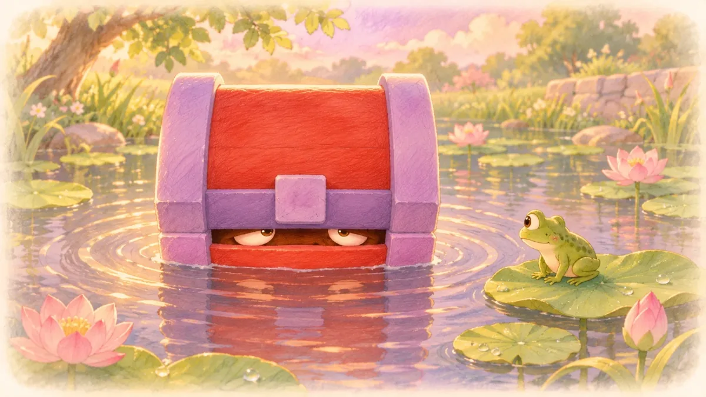
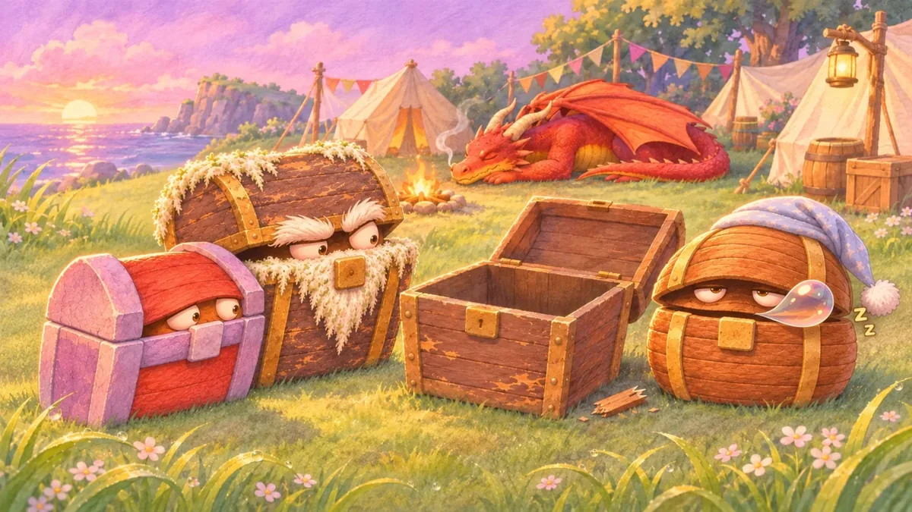
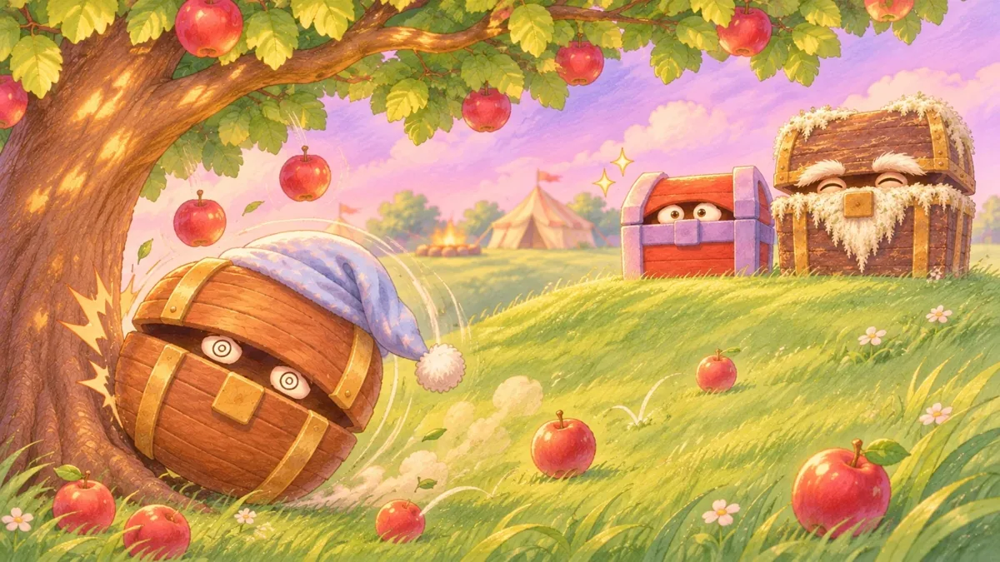
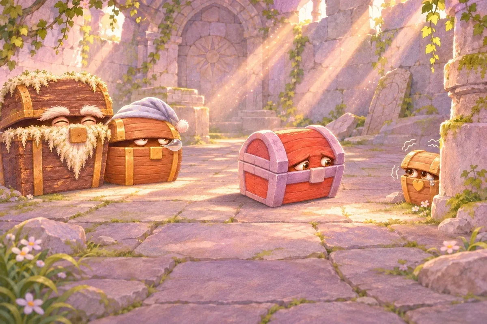
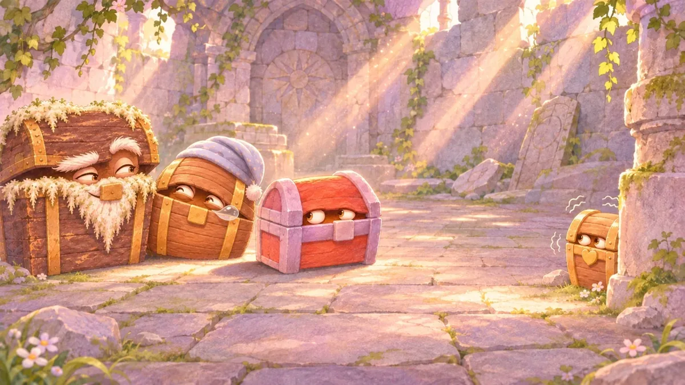
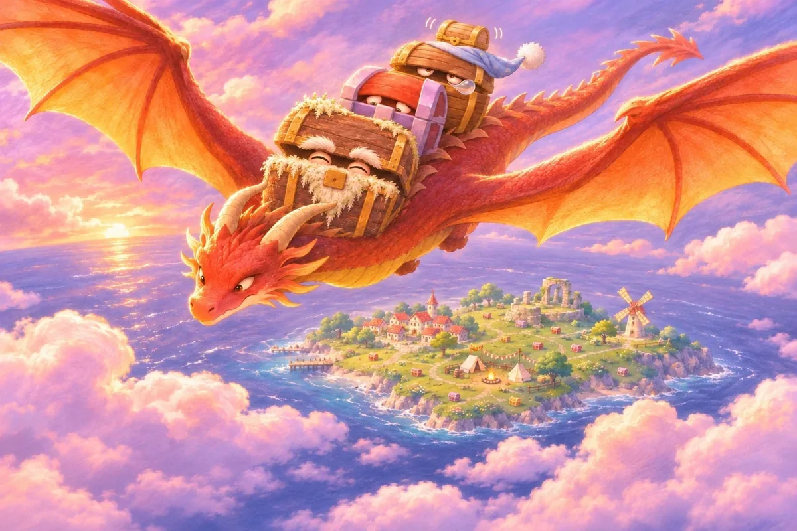
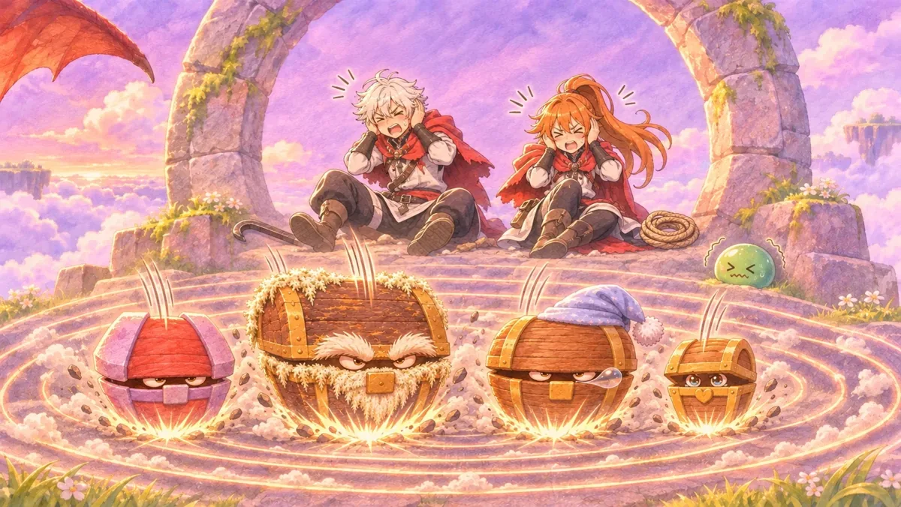
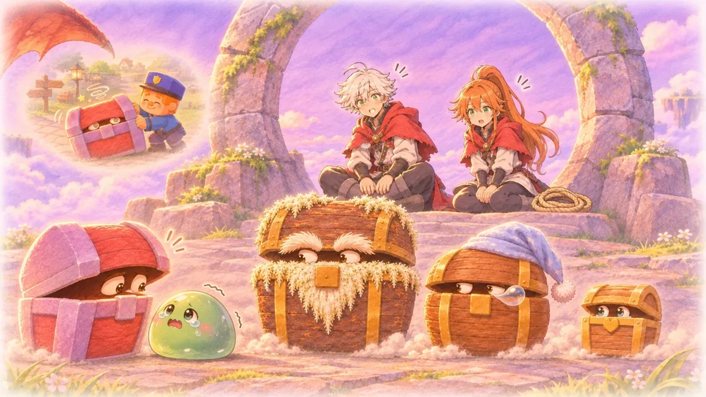
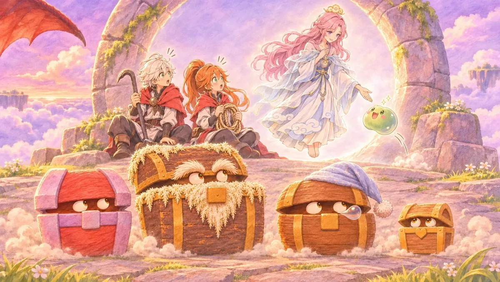

長老家倉庫裡用了一百年的箱子，醒過來變成寶箱怪。整個夏天島上只有它醒著，每天去敲族人的蓋子，一個敲三下。
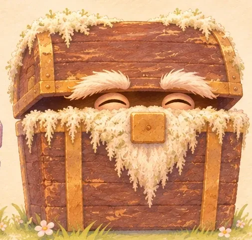
村口最老的寶箱，白青苔像鬍子。身上收著村子裡好幾代人交給他顧的東西。
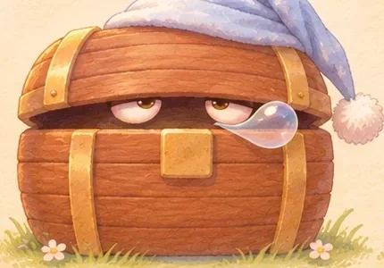
營地的寶箱，睡最熟，戴一頂淡藍色睡帽。睡覺翻身會滾下坡。
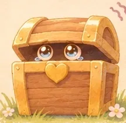
遺跡裡最小的寶箱，心形鎖扣，膽子很小。害怕的時候就把蓋子闔緊。
這是 Larch 第四屆創作者挑戰（主題：神秘小島）的參賽作品，從 Larch 官方 3D 範例《Pulut 大冒險 3D》改作。3D 場景、模型與角色盡量沿用官方範例，主要換掉劇情：玩家從冒險者變成島上的原住民寶箱怪。
劇本、設計紀錄與工具都在 GitHub。文字與原創素材採 CC BY-NC 4.0，工具程式碼採 MIT；範例的場景、模型與內建素材權利屬於 Larch。